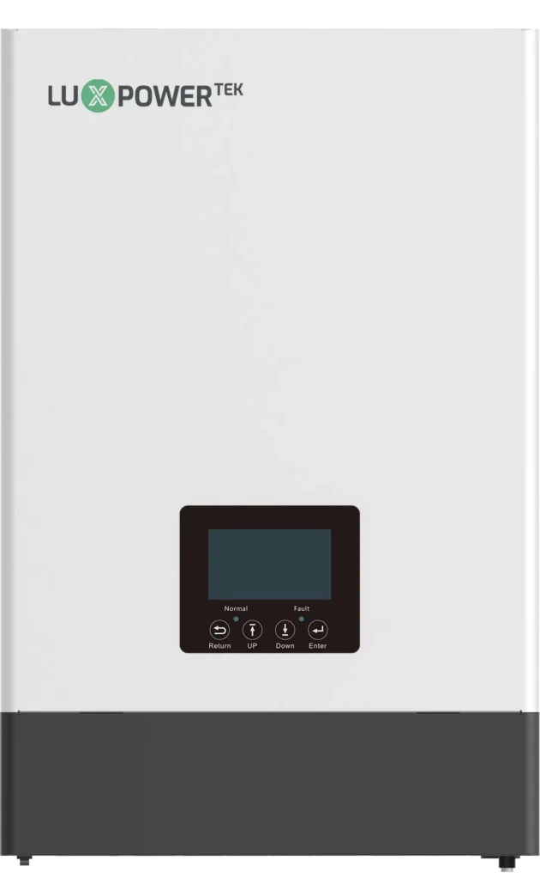
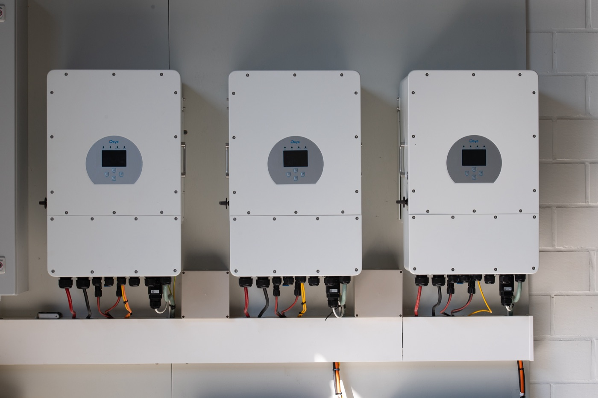
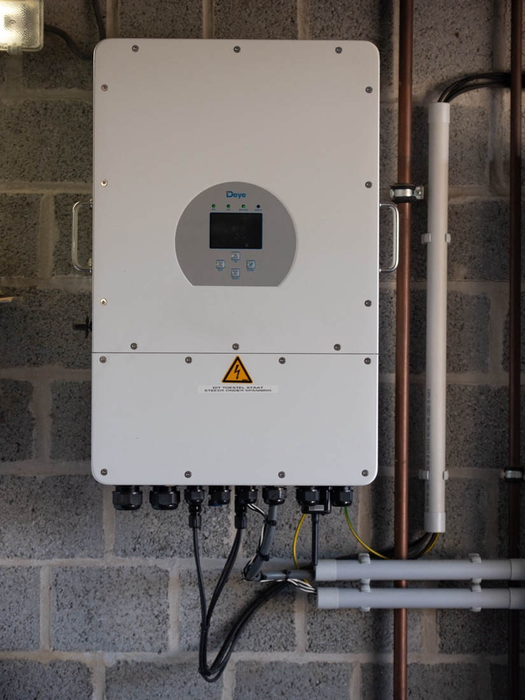

Kort antwoord
Een hybride omvormer. Die stuurt panelen, batterij en net met één toestel, ook als u vandaag alleen panelen plaatst. De batterij kan er later bij zonder dat de omvormer vervangen moet worden.
Kiest u nu een gewone omvormer, dan koopt u bij een latere batterij een tweede toestel dat niet nodig was geweest. Dat is de duurste beslissing die u aan het begin van een dossier kan nemen.

Onze omvormers komen van Deye: een beursgenoteerde fabrikant met meer dan 600.000 m² productiehallen en een Europese productlijn die aan de strengste netnormen voldoet. De omvormer is het hart van uw installatie — daar kiezen wij niet op prijs.
Één toestel voor zonnepanelen, batterij en net. AC-koppeling maakt het ook mogelijk een bestaande installatie uit te breiden.
Volg opbrengst, verbruik en batterijlading in real time op uw gsm — laadpaal inbegrepen. Wij kijken mee en merken een terugval meteen op.
Bekroond als topmerk voor omvormers én opslag in de belangrijkste markten.
TÜV Rheinland-certificaten en CEI 0-21 via Kiwa. Een beursgenoteerde fabrikant die er over tien jaar nog is voor uw garantie.
Niet elke woning vraagt dezelfde omvormer. LuxPowerTek maakt hybride omvormers die ontworpen zijn rond opslag: hun toestellen koppelen ook via AC, waardoor een woning die al zonnepanelen heeft er later een batterij bij kan krijgen zonder de bestaande installatie om te bouwen. Wij kiezen per dossier tussen Deye en LuxPowerTek — niet omgekeerd.

De hybride LXP-reeks stuurt zonnepanelen, batterij en net vanuit één toestel, met opslag als uitgangspunt in plaats van als optie achteraf.
AC-koppeling betekent dat uw bestaande zonne-installatie kan blijven staan. U voegt een batterij toe zonder de omvormer die er al hangt te vervangen.
Het eigen monitoringplatform toont opbrengst, verbruik en batterijstand. Wij kijken mee en merken een terugval op voor u ze zelf ziet.
De fabrikant meldt meer dan 300.000 geïnstalleerde systemen wereldwijd, met internationale netcertificaten voor de Europese markt.
Geen renders, geen catalogusfoto’s: dit zijn installaties die wij zelf hebben geplaatst.


Uw panelen maken een soort stroom die geen enkel toestel in uw huis kan gebruiken. De omvormer zet die om naar de stroom uit uw stopcontact. Alles wat uw dak opwekt, passeert er dus langs.
Vergelijk het met de motor van een wagen: de panelen zijn de brandstof, maar de motor bepaalt wat u er werkelijk mee doet. Daarom is dit het onderdeel waar een goedkope keuze zich het langst laat voelen.
Een hybride omvormer kan één ding extra: hij kan ook een batterij aansturen. U hoeft die batterij vandaag niet te kopen. U houdt alleen de deur open.
Plaatst u nu een gewone omvormer en wilt u over drie jaar toch opslag, dan komt er een tweede toestel bij uw kast te hangen. Dat is geld dat u niet had moeten uitgeven. Wij vragen daarom bij het plaatsbezoek altijd of een batterij ooit in uw plannen zit — ook als het antwoord “misschien” is.
| Uw plan | Wat wij plaatsen |
|---|---|
| Alleen panelen, batterij misschien later | Hybride omvormer. De batterij kan er later bij zonder het toestel te vervangen. |
| Panelen en batterij samen | Hybride omvormer die beide van dag één stuurt, met één monitoring voor het geheel. |
| Bestaande installatie uitbreiden | AC-koppeling, zodat uw huidige panelen kunnen blijven liggen. |
| Elektrische wagen op de oprit | Omvormer en laadpaal die samenwerken, zodat laden verschuift naar de zonuren. |
Er bestaan goedkopere omvormers. Het probleem is niet de eerste dag, het is jaar acht: een merk dat van de markt verdwenen is, geeft geen garantie meer en levert geen onderdelen. Dan hangt er een toestel aan uw muur dat niemand nog kan herstellen.
Wij werken met een beursgenoteerde fabrikant met een Europese productlijn, TÜV Rheinland-certificaten en CEI 0-21 via Kiwa. Niet omdat certificaten mooi klinken, maar omdat wij degene zijn die terugkomt als er iets is.
Een schouw, een dakraam of de boom van de buren: bij gedeeltelijke schaduw kan één paneel de rest van zijn reeks meesleuren. Met sturing per paneel gebeurt dat niet.
Of dat bij u nodig is, hangt af van uw dak en van het uur waarop die schaduw valt. Dat beoordelen wij ter plaatse in plaats van het standaard mee te verkopen. Meer daarover op de pagina over zonnepanelen.
Een hybride omvormer stuurt panelen en batterij met een enkel toestel. Plaatst u vandaag alleen panelen, dan kan de batterij later bijgezet worden zonder de omvormer te vervangen.
Wie dat vergeet, koopt bij een latere batterij een tweede toestel dat niet nodig was geweest.
Wij werken met Deye omvormers: breed verkrijgbaar in Europa, degelijke monitoring en compatibel met de batterijsystemen die wij plaatsen.
Garantie: 10 jaar.
Bij gedeeltelijke schaduw zorgt sturing per paneel ervoor dat een module in de schaduw de rest van de reeks niet meesleurt. Of dat bij u nodig is, hangt af van uw dak; wij bekijken het ter plaatse.
Ja. U volgt opbrengst, verbruik en batterijlading in real time op uw gsm via Deye Cloud. Wij kijken mee in dezelfde monitoring, zodat een terugval ons opvalt in plaats van maanden onopgemerkt te blijven.
Een omvormer hangt tegen een wand in de garage, berging of technische ruimte, zo kort mogelijk bij de meterkast. Hij heeft ventilatie nodig en staat niet graag in de volle zon.
De exacte plaats bij u bepalen wij tijdens het plaatsbezoek, samen met de weg van de kabels en de plaats van een eventuele batterij.
Een omvormer is doorgaans het eerste onderdeel dat na de panelen aan vervanging toe is — dat is normaal en hoort bij de levensduur van een installatie.
Wij geven 10 jaar garantie op de omvormer. Die termijn is niet verlengbaar.
Uw installatie stopt dan met opwekken tot hij hersteld of vervangen is — vandaar dat wij de monitoring meevolgen in plaats van te wachten op uw telefoon.
Wij komen binnen de 48 uur ter plaatse. Een tijdelijk vervangtoestel voorzien wij niet; wij zetten in op een snelle herstelling of vervanging.
Vertel ons kort iets over uw woning en wat u zoekt. Wij komen langs, kijken ter plaatse, en sturen een duidelijke offerte zonder verplichting.
+32 495 30 38 99
koen.dewolf@alu-dewolf.be
Elzelestraat 137, 9600 Ronse
Keistraat 3, 9681 Maarkedal, België
Enkel op afspraak